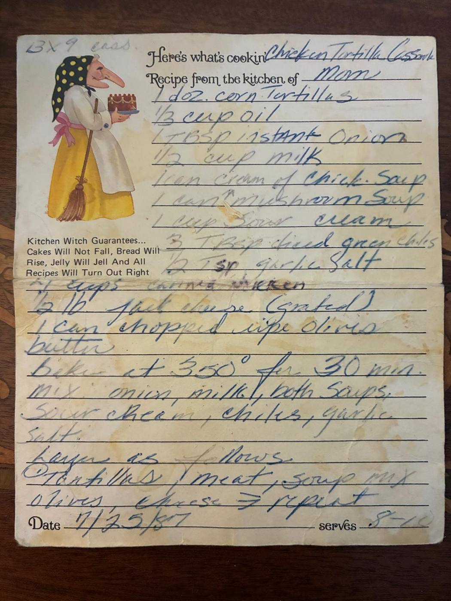

Mains
Chicken Tortilla Casserole
From the kitchen of Mom
Oven350°F
Bake30 min
Dish13×9 casserole
Serves8–10

Mom's original card · tap to enlarge
Ingredients
Method tap a step to mark it done
- Grease a 13×9 casserole dish with butter.
- Heat the oil in a pan and soften the tortillas in it.
- Mix the onion, milk, both soups, sour cream, chiles and garlic salt.
- Layer in the dish: tortillas, chicken, soup mixture, olives, cheese. Repeat the layers.
- Bake at 350°F for 30 minutes.